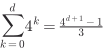
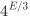
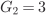
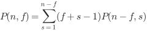
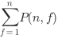
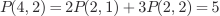
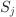
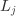
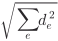
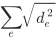

인접한 두 동전을 같이 뒤집으면 T 개수는 −2·0·+2만큼 변한다. T 개수의 parity(짝홀성)는 불변이다. 모두 H인 목표는 T가 0개이므로 처음 T가 홀수이면 불가능, 짝수이면 가능하다.
최소 횟수는 왼쪽부터 T 두 개씩 짝지어 위치 차이의 합이다. THHT는 위치 0과 3 → 3회. THHT → HTHT → HHTT → HHHH. T가 2개라는 이유로 1회라고 쓰지 않는다.
반환 −1은 불가능, 0은 이미 목표이다. 시간 , 추가 공간 .
구현 핵심
def coinflip2(coins):
unmatched = -1
total = 0
for i, state in enumerate(coins):
if state == "T":
if unmatched == -1:
unmatched = i
else:
total += i - unmatched
unmatched = -1
return -1 if unmatched != -1 else total
def festival(cost, L):
n = len(cost) # 1 <= L <= n
P = [0] * (n + 1)
for i in range(n):
P[i + 1] = P[i] + cost[i]
best = float("inf")
for i in range(n - L + 1):
for j in range(i + L, n + 1):
best = min(best, (P[j] - P[i]) / (j - i))
return best
재귀는 종료 조건 → 다음 선택 → 상태 변경 → 재귀 → 복구 순서다. 아래 코드는 0..n−1 중 r개를 고른다. 다음 후보는 i + 1부터 시작하므로 순서만 다른 중복이 없다. 선택한 개수가 r이면 복사본을 저장한다.
순열은 순서가 다르면 다른 답이고, 조합은 같은 집합이면 같은 답이다. 답을 전부 출력하는 비용도 센다: 조합 출력은 대략 , 스택·현재 선택은 , 저장한 결과는 별도다.
인자에서 리스트를 공유하면 append 뒤 pop이 필요하다. chosen + [i]로 새 리스트를 넘기는 방식은 복구 대신 복사 비용을 지불한다.
같은 재귀 원리의 예: Hanoi는 n−1개 이동→가장 큰 원판→n−1개 이동이라 이동 횟수 , 호출 스택 이다. 행렬곱은 C[i][j] += A[i][k] * B[k][j]이고 k가 끝나면 다음 j, j가 끝나면 다음 i로 간다. 반복을 재귀로 바꾸어도 개의 곱셈이라는 일의 양은 줄지 않는다.
구현 핵심
def combinations(n, r):
out, chosen = [], []
def search(start):
if len(chosen) == r:
out.append(chosen[:]) # 복사해 보관
return
for i in range(start, n):
chosen.append(i)
search(i + 1)
chosen.pop() # 다른 가지를 위한 복구
search(0)
return out
출제 예고: SST 크기 계산. 루트 깊이 0, 스위치 d개, 스위치당 0·1·2·3회인 4분기 완전 트리를 센다.
물어보는 값
일반식
d=10
리프 수
= 1,048,576
전체 노드·함수 호출 수

1,398,101
최대 깊이 / 동시에 쌓인 호출 수
d / d+1
10 / 11
가지치기 없는 기본 DFS의 수이며 개선 풀이의 탐색량과 섞지 않는다. 아래 linked[s]는 문제에서 제공한 s번 스위치와 연결된 시계 인덱스 목록이다. 입력 시간을 (hour // 3) % 4로 바꾸면 12시는 0이다.
search(s)는 s 이후 스위치로 맞추는 최소 추가 누름 수이다. 재귀를 먼저, push를 나중에 하므로 cnt = 0도 조사한다. 루프가 끝나면 push가 4회 실행되어 입력 시계가 복구된다. 시간 , 스택 ; 시계·연결 개수를 고정 상수로 본다.
구현 핵심
def clocksync(clocks, linked):
INF = float("inf")
def push(s):
for c in linked[s]:
clocks[c] = (clocks[c] + 1) % 4
def search(s):
if s == 10:
return 0 if not any(clocks) else INF
best = INF
for cnt in range(4):
best = min(best, cnt + search(s + 1))
push(s)
return best
answer = search(0)
return -1 if answer == INF else answer
0은 빈칸, 1은 막힘/이미 채움. L자 3칸 조각으로 덮는다. 빈칸 수가 3의 배수가 아니면 답은 0이지만, 배수라는 조건만으로 배치가 존재하지는 않는다.
가장 위·왼쪽의 첫 빈칸을 고정하고 그 칸을 덮는 네 모양만 시도한다. 아무 빈칸이나 다음 대상으로 고르면 같은 배치를 다른 순서로 중복 센다. 빈칸 없음의 반환은 1: 완성된 배치 한 가지다.
아래는 배치 전에 세 칸을 모두 검사하여 성공한 배치만 변경·복구한다. 강의의 place(+1)은 실패해도 일부 칸이 변할 수 있으므로 그 버전에서는 성공 여부와 무관하게 place(−1)을 호출한다. 두 구현 규칙을 섞지 않는다. E개 빈칸에 대해 가지 수 상한

, 각 호출에서 빈칸 찾기 가 든다.
구현 핵심
SHAPES = [((0, 0), (1, 0), (0, 1)), ((0, 0), (0, 1), (1, 1)),
((0, 0), (1, 0), (1, 1)), ((0, 0), (1, 0), (1, -1))]
def cover(board): # 0: 빈칸, 1: 막힘/이미 채움
H, W = len(board), len(board[0])
pos = next(((y, x) for y in range(H) for x in range(W)
if board[y][x] == 0), None)
if pos is None:
return 1 # 완성된 배치 한 가지
y, x = pos
total = 0
for shape in SHAPES:
cells = [(y + dy, x + dx) for dy, dx in shape]
if all(0 <= a < H and 0 <= b < W and board[a][b] == 0
for a, b in cells):
for a, b in cells: board[a][b] = 1
total += cover(board)
for a, b in cells: board[a][b] = 0
return total
상태는 (y,x,k): 그 칸에서 word[k:]를 만들 수 있는가. 범위 밖/글자 불일치 → False, 마지막 글자 일치 → True, 나머지는 8방향 + k+1이다.
이 수업 규칙에서는 칸 재방문이 가능하다. 이웃 A,B로 ABA를 찾을 수 있다. 같은 칸에서 이동 없이 두 글자를 읽을 수는 없다. 따라서 (dy, dx) = (0, 0)을 빼며, visited로 재방문을 막지 않는다.
길이 L, H×W 보드의 단순 DFS 상한 , 스택 . 메모를 쓴다면 키에도 k가 있어야 한다. 추가 실습 권장이라는 말은 시험 제외가 아니다.
구현 핵심
def boggle(board, word): # word는 비어 있지 않음
H, W = len(board), len(board[0])
def has(y, x, k):
if not (0 <= y < H and 0 <= x < W): return False
if board[y][x] != word[k]: return False
if k == len(word) - 1: return True
return any(has(y + dy, x + dx, k + 1)
for dy in (-1, 0, 1) for dx in (-1, 0, 1)
if dy != 0 or dx != 0)
return any(has(y, x, 0) for y in range(H) for x in range(W))
빠른 합 에서 홀수는 , 짝수는 이다. 거듭제곱은 절반 지수를 한 번만 계산해 저장한 뒤 제곱한다.
power(A, m // 2)를 두 번 호출하면 , 한 번만 호출하면 이다. 고정 크기 행렬 곱을 상수 비용으로 본 설명이며 임의 차원 행렬 곱 비용은 별도다.
아래 multiply는 곱셈 함수, identity는 항등원(스칼라 1 또는 항등행렬)이다. 지수 0의 답은 항등원. 시간·스택 .
빠른 합
def fast_sum(n): # n >= 1
if n == 1: return 1
if n % 2: return fast_sum(n - 1) + n
return 2 * fast_sum(n // 2) + n * n // 4
반환값을 저장하는 거듭제곱
def power(A, m, multiply, identity):
if m == 0: return identity
if m % 2: return multiply(power(A, m - 1, multiply, identity), A)
half = power(A, m // 2, multiply, identity)
return multiply(half, half)
Lec.03 pp. 17–37 (배포본 미포함) · Lec.03 pp. 38–42 (배포본 미포함) · 학습실·모션 ↗
출제 예고는 상하 뒤집기에 있다. b / w는 단색 잎, x 뒤는 상좌 q1 → 상우 q2 → 하좌 q3 → 하우 q4 네 자식이다. 한 자식 자체가 긴 트리일 수 있어 문자열을 같은 길이로 4등분하면 안 된다.
네 자식을 원래 순서로 재귀적으로 읽고, 반환은 "x" + q3 + q4 + q1 + q2이다. 재귀가 각 자식 내부도 이미 뒤집는다. 부모의 자리만 바꾸면 불완전한 반전이다. iterator 또는 읽기 인덱스는 자식 네 호출이 공유한다.
xbwwb → xwbbw → 다시 뒤집으면 xbwwb. n은 이미지 한 변이 아니라 여기서는 인코딩 길이. 강의의 노드 방문 분석은 이다. Python 문자열을 새로 복사하는 비용까지 세면 높이 h에 대해 , 균형 트리는 , 매우 치우치면 까지 고려한다. 이미지의 픽셀을 채우는 디코딩 비용과 구분한다.
인코딩·디코딩은 표현 이해를 위한 구현 권고다. 그 두 구현 자체가 직접 출제 확정이라는 뜻은 아니다. 자세한 구현은 학습실 링크에서 확인한다.
Lec.03 pp. 43–55 (배포본 미포함) · Lec.03 pp. 56–65 (배포본 미포함) · 학습실·모션 ↗
답은 왼쪽 내부 / 오른쪽 내부 / 중앙을 가로지름 중 최대이다. 재귀 구간이 [left,right]이면 오른쪽은 mid+1부터. 중앙 걸침은 [mid, mid + 1]에서 시작해 더 높은 쪽으로 늘리며 최소 높이 × (high−low+1)를 갱신한다. 시간 , 스택 .
단조 스택은 높이가 비감소하도록 인덱스를 보관한다. 더 낮은 판자 i를 만나 j를 pop한 뒤의 왼쪽 경계를 쓴다. 스택이 비면 너비 i, 아니면 i−stack[−1]−1. 양쪽 경계는 포함하지 않는다.
끝에 0 높이를 추가하면 남은 판자도 처리된다. 각 판자는 한 번 들어가고 나와 시간 , 공간 . 예: i=7, pop 뒤 왼쪽 경계=2, 높이=3이면 너비4·넓이12.
분할정복의 경계 확장
def fence(h, left, right):
if left == right: return h[left]
mid = (left + right) // 2
best = max(fence(h, left, mid), fence(h, mid + 1, right))
lo, hi = mid, mid + 1
height = min(h[lo], h[hi])
best = max(best, height * 2)
while left < lo or hi < right:
if hi < right and (lo == left or h[lo - 1] < h[hi + 1]):
hi += 1
height = min(height, h[hi])
else:
lo -= 1
height = min(height, h[lo])
best = max(best, height * (hi - lo + 1))
return best
스위핑·단조 스택
def fence_stack(heights):
h = heights + [0] # 끝에서 남은 판자를 모두 처리
stack, best = [], 0
for i in range(len(h)):
while stack and h[stack[-1]] >= h[i]:
j = stack.pop()
width = i if not stack else i - stack[-1] - 1
best = max(best, h[j] * width)
stack.append(i)
return best
Optimal substructure(최적 부분구조)는 최적해가 부분문제의 최적해를 이용해 구성되는 성질, Overlapping subproblems(중복 부분문제)는 같은 부분문제를 여러 번 푸는 성질이다. 두 용어를 바꾸지 않는다.
상태의 뜻 → 점화식 → 기저 → 계산 순서 → 반환값 순서로 읽는다. Memoization은 필요한 상태를 재귀+캐시로 구하고, Tabulation은 의존하는 상태부터 표를 채운다. 비용은 상태 수 × 한 상태의 전이 비용으로 센다.
이항계수 , . 한 행으로 압축하면 j를 큰 쪽에서 작은 쪽으로 갱신해야 이전 행 값을 읽는다.
캐시의 −1은 미계산 표시이다. 답으로 0이 나올 수 있으면 0을 미계산으로 사용하지 않는다. 강의 지침에 맞춰 아래 요약 코드는 직접 표/딕셔너리를 사용한다. @cache만 붙이면 상태 설계나 메모리 문제가 해결되는 것은 아니다.
제약 조건 때문에 충분한 상태를 저장하기 어렵다면, 조건을 일찍 검사해 후보를 줄이는 Backtracking(백트래킹)이 적절할 수 있다. “제약이 있으면 무조건 DP 불가”는 아니다. 알파메틱처럼 문자↔숫자가 일대일 대응이면 사용한 숫자·선행 0 금지·각 식의 조건을 함께 관리한다.
한 행 이항계수
def choose(n, k): # 0 <= k <= n
dp = [1] + [0] * k
for i in range(1, n + 1):
for j in range(min(i, k), 0, -1):
dp[j] += dp[j - 1]
return dp[k]
def trianglepath(T):
dp = T[-1][:]
for y in range(len(T) - 2, -1, -1):
for x in range(y + 1):
dp[x] = T[y][x] + max(dp[x], dp[x + 1])
return dp[0]
선택 위치로 실제 경로 복원
def triangle_solution(T):
n = len(T)
dp = T[-1][:]
path = [[0] * (i + 1) for i in range(n)]
for y in range(n - 2, -1, -1):
for x in range(y + 1):
down, right = dp[x], dp[x + 1]
path[y][x] = -1 if down > right else 1 if down < right else 0
dp[x] = T[y][x] + max(down, right)
x, route = 0, []
for y in range(n):
route.append(T[y][x])
if y < n - 1 and path[y][x] >= 0: x += 1
return dp[0], route
2×n 판을 1×2 도미노만으로 채우면 . 빈 판을 한 가지로 세는 확장 정의는 이며 답은 Fibonacci의 n+1번째와 같다.
2×2 정사각형 타일까지 추가하면 , ,

이다. 도미노만 있을 때의 점화식을 그대로 쓰지 않는다. n=3이면 기본3가지 / 추가타일5가지다.
기본 재귀는 지수 시간, 메모·표는 , 두 변수는 시간 ·추가 공간 이다.
a, b = b, (a + b) % MOD는 오른쪽의 갱신 전 값으로 동시에 계산한다.
아래 반복 구현은 F(0)=1. 과제의 행렬 버전은 n≥1에서 같고, n=0 반환 규약은 다르다. 행렬 M = [[1, 1], [1, 0]]의 n제곱에서 [0][0]을 읽으면 F(n). 빠른 제곱 시간 , 재귀 스택 .
모듈러는 정수 크기를 제한한다. 이미 큰 a,b를 갖고 (a % M + b % M) % M를 한 번 하는 것이 무조건 더 빠르다는 뜻이 아니다. 매 단계 저장값을 M 미만으로 유지해 이후 큰 정수 연산 비용이 커지지 않게 하는 것이 핵심이다.
도미노만 허용한 상수 공간 DP
def tiling(n, MOD = 1000000007):
a, b = 1, 1 # F(0), F(1)
for _ in range(2, n + 1):
a, b = b, (a + b) % MOD
return 1 if n == 0 else b
과제와 연결되는 행렬 거듭제곱
def tiling_matrix(n, mod = 1000000007):
def mul(A, B):
return [[sum(A[i][k] * B[k][j] for k in range(2)) % mod
for j in range(2)] for i in range(2)]
result = [[1, 0], [0, 1]]
base = [[1, 1], [1, 0]]
while n:
if n % 2:
result = mul(result, base)
base = mul(base, base)
n //= 2
return result[0][0]
P(n, first)는 n칸짜리 세로로 단조인 폴리오미노 중 첫 행이 first칸인 경우의 수다. 모든 임의 폴리오미노를 세는 문제로 확대하지 않는다.
다음 행 길이가 second이면 붙이는 가로 위치가 first+second−1개다. 아래 수식에서 f는 first, s는 second를 줄인 기호다.

. n == first이면 한 행 하나이므로 1이다.
답은 첫 행 길이가 정해지지 않았으므로

.

, 전체 . 상태 , 전이 → 시간 , 공간 . 과제의 표는 n을 증가시키며 채운다.
명시적 캐시로 점화식 구현
def count_poly(n, MOD = 10000000):
memo = {}
def poly(n, first):
if n == first: return 1
key = (n, first)
if key not in memo:
memo[key] = sum((first + second - 1) *
poly(n - first, second)
for second in range(1, n - first + 1)) % MOD
return memo[key]
return sum(poly(n, f) for f in range(1, n + 1)) % MOD
이다. 뿌리 하나를 뺀 n−1개를 왼쪽 i개·오른쪽 n−1−i개로 나눈다. 곱은 두 선택을 조합, 합은 모든 나누기를 모은다.
1,1,2,5,14,42,…. 모양 개수를 구할 때 을 0으로 두면 한쪽이 빈 경우가 모두 사라진다. 시간 , 추가 공간 . 식의 오른쪽에 n−i를 쓰거나 합 범위에서 n−1을 빼먹지 않는다.
구현 핵심
def catalan(n, MOD = 1000000007):
C = [0] * (n + 1)
C[0] = 1
for size in range(1, n + 1):
for left in range(size):
C[size] = (C[size] + C[left] * C[size - 1 - left]) % MOD
return C[n]
Lec.05 pp. 11–23 (배포본 미포함) · Lec.05 pp. 24–30 (배포본 미포함) · 학습실·모션 ↗
Fractional은 물건을 쪼갤 수 있어 가치/무게 비율순 탐욕이 성립한다. 0-1은 통째로 넣거나 빼므로 그 탐욕이 일반적으로 성립하지 않는다.
B(i, c)는 i번부터, 남은 용량 c에서 얻는 최대 가치. skip=, take=이며 w[i]≤c인 경우에만 take한다. 같은 i라도 c가 다르면 다른 상태다.
복원 시 이면 이 구현은 동률에서 건너뛴다. 그 외에는 물건 i를 기록하고 c −= w[i], i += 1로 이동한다. 최적값만 맞아도 선택 목록을 복원한 것은 아니다.
시간·캐시 , 스택 . W는 숫자 값이므로 입력 비트 길이 기준으로는 pseudo-polynomial(의사다항)이다. 1행 0-1 배낭은 용량을 큰 쪽→작은 쪽으로 갱신해야 같은 물건을 중복 사용하지 않는다.
직접 캐시와 동률 skip 복원
def packing(w, p, W):
n, memo = len(w), {}
def best(i, c):
if i == n: return 0
key = (i, c)
if key not in memo:
value = best(i + 1, c)
if w[i] <= c:
value = max(value, p[i] + best(i + 1, c - w[i]))
memo[key] = value
return memo[key]
chosen, c = [], W
for i in range(n):
if best(i, c) != best(i + 1, c):
chosen.append(i)
c -= w[i]
return best(0, W), chosen
Lec.05 pp. 31–41 (배포본 미포함) · Lec.05 pp. 42–45 (배포본 미포함) · 학습실·모션 ↗
엄격한 증가이므로 비교는 <이다. 다음 두 표는 방향이 다르지만 전체 최적값은 같다.
상태
후보 j
계산 순서
[1,3,2,4]의 표
: 에서 시작
j>i, <

i 감소
[3,2,2,1]
dp[i]: 에서 끝남(실행 과제)
j<i, <
i 증가
[1,2,2,3]
choices[i]는 길이가 아니라 다음 원소의 인덱스, −1이면 종료. 시작형은 최댓값 인덱스부터 따라간다. 시간· 공간이다.
빠른 tails[k]는 길이 k+1 증가 부분수열의 가능한 최소 끝값. bisect_left로 첫 ≥x 자리를 교체하며 시간 . tails가 최종 LIS 자체라고 단정하지 않는다. [3, 5, 7, 8, 1]에서 tails=[1,5,7,8]은 인덱스 순서상 실제 부분수열이 아니다. 실제 해는 predecessor 등이 더 필요하다.
길이와 choices 복원
def lis_solution(S):
n = len(S)
if n == 0: return 0, []
L, choices = [1] * n, [-1] * n
for i in range(n - 1, -1, -1):
for j in range(i + 1, n):
if S[i] < S[j] and L[i] < L[j] + 1:
L[i], choices[i] = L[j] + 1, j
start = max(range(n), key = lambda i:L[i])
length, route = L[start], []
while start != -1:
route.append(S[start])
start = choices[start]
return length, route
tails로 길이만 구하기
from bisect import bisect_left
def lis_length(S):
tails = []
for x in S:
k = bisect_left(tails, x) # 처음으로 x 이상인 위치
if k == len(tails): tails.append(x)
else: tails[k] = x
return len(tails)
서로 다른 원소, 유효한 1-based k가 전제다. 는 그 위치에서 시작하는 최장 길이, 는 그 길이를 만드는 수열 수이다. 끝나는 곳은 =1, =1.
다음 후보는 j>i, <, ==

+1을 모두 만족해야 한다. 앞의 두 조건만 쓰면 최장이 아닌 증가 부분수열도 세게 된다.
후보를 값 오름차순으로 정렬하고 skip = k−1을 둔다. ≤skip이면 그 묶음을 넘기며 skip−=C[j]. 아니면 그 분기로 간다. 길이가 최대인 시작점 수를 세는 것이 LIS 개수는 아니다.
가상 −∞의 길이 1은 결과에서 뺀다. 아래 구현은 정확한 Python 정수를 쓴다. 개수를 포화시킨다면 여야 한다. 과제 과 PDF의 2,000,000,001은 다르며, 후자를 큰 k에 그대로 쓰면 틀릴 수 있다.
길이·개수 DP , 아래 매 단계 후보 정렬 복원은 안전 상한 . [5, 1, 6, 4, 3, 2, 8, 7]의 최장 길이3·전체10개·6번째는 [1,4,8]이다.
구현 핵심
def kth_lis(S, k): # 서로 다른 값, 유효한 1-based k
A = [float("-inf")] + S # 가상 시작점
n = len(A)
L, C = [1] * n, [1] * n
for i in range(n - 1, -1, -1):
followers = [j for j in range(i + 1, n) if A[i] < A[j]]
if followers:
L[i] = 1 + max(L[j] for j in followers)
C[i] = sum(C[j] for j in followers if L[i] == L[j] + 1)
if not 1 <= k <= C[0]: raise ValueError("k 범위")
i, skip, answer = 0, k - 1, []
while L[i] > 1:
followers = sorted((A[j], j) for j in range(i + 1, n)
if A[i] < A[j] and L[i] == L[j] + 1)
for value, j in followers:
if C[j] <= skip: skip -= C[j]
else:
answer.append(value)
i = j
break
return answer
Lec.06 pp. 2–7 (배포본 미포함) · Lec.06 pp. 8–18 (배포본 미포함) · 학습실·모션 ↗
Greedy choice property(탐욕적 선택 속성)는 현재 선택을 포함하는 최적해가 적어도 하나 있다는 성질이다. 최적 부분구조만 있다고 아무 국소 선택이나 해도 되는 것은 아니다. Exchange argument(교환 논증)는 최적해의 선택을 탐욕 선택으로 바꿔도 나빠지지 않음을 보인다.
MATCHORDER는 상대 이상(≥) 레이팅이면 이긴다. 이길 수 있으면 이기는 선수 중 가장 약한 선수를 쓰고, 모두 못 이기면 가장 약한 선수를 버린다. 이분 탐색은 bisect_left이다.
Python 정렬 리스트에서 pop은 이동 이므로 아래 총시간은 , 정렬·탐색만 보고 이라고 쓰지 않는다. 입력 리스트를 변경하는 구현인지도 확인한다.
구현 핵심
from bisect import bisect_left
def matchorder(russian, korean):
left = sorted(korean)
wins = 0
for rating in russian:
if left[-1] < rating:
left.pop(0)
else:
wins += 1
left.pop(bisect_left(left, rating))
return wins
from heapq import heapify, heappop, heappush
from itertools import count
class Node:
def __init__(self, char, freq, left = None, right = None):
self.char, self.freq = char, freq
self.left, self.right = left, right
def huffman(pairs): # 서로 다른 문자, 양의 빈도, 두 문자 이상
serial = count()
q = [(f, next(serial), Node(c, f)) for c, f in pairs]
heapify(q)
while len(q) > 1:
fa, _, a = heappop(q)
fb, _, b = heappop(q)
parent = Node(None, fa + fb, a, b)
heappush(q, (fa + fb, next(serial), parent))
return q[0][2]
코드표 생성과 반복 디코더
def make_encoder(node, code, encoder):
if node.char is not None:
encoder[node.char] = code
else:
make_encoder(node.left, code + "0", encoder)
make_encoder(node.right, code + "1", encoder)
def decode(root, bits):
node, result = root, []
for bit in bits:
if bit not in "01": raise ValueError("비트 오류")
node = node.left if bit == "0" else node.right
if node is None: raise ValueError("트리와 불일치")
if node.char is not None:
result.append(node.char)
node = root
if node is not root: raise ValueError("미완성 코드")
return "".join(result)
def prim(adj): # adj[u]: {v: weight}, 연결된 무방향 그래프
n = len(adj)
added, parent = [False] * n, [-1] * n
weight = [float("inf")] * n
weight[0] = 0
total, edges = 0, []
for _ in range(n):
u = min((v for v in range(n) if not added[v]), key = lambda v:weight[v])
if weight[u] == float("inf"): raise ValueError("연결되지 않음")
added[u] = True
total += weight[u]
if parent[u] != -1: edges.append((parent[u], u))
for v, w in adj[u].items():
if not added[v] and w < weight[v]:
weight[v], parent[v] = w, u
return total, edges
좌표는 완전 그래프를 만든다. 새 케이블 비용은 Euclidean distance이다. 기존 케이블은 양방향 비용 0으로 둔다. 제곱 거리로 간선 크기를 비교해도 순서는 같지만 결과에는 선택한 각 간선에 sqrt를 취해 더한다.

와

는 다르다. 수식의 는 선택한 간선 e의 실제 길이다. 이미 연결된 간선도 Prim의 선택·방문 진행에 포함하며 추가 비용만 0이다. 과제의 dist = -1 방문 표식 버전에서 후보는 dist≥0이어야 0원 간선을 버리지 않는다.
A=(0,0), B=(3,0), C=(3,4), A–B가 기존 연결이면 새 비용은 B–C의 4이다. 거리 행렬을 쓰는 아래 구현은 시간·공간 . n≥1을 전제한다.
구현 핵심
import math
def lan(points, installed):
n = len(points)
W = [[(x - a) ** 2 + (y - b) ** 2 for a, b in points] for x, y in points]
for u, v in installed: W[u][v] = W[v][u] = 0
dist, added = [float("inf")] * n, [False] * n
dist[0] = 0
total = 0.0
for _ in range(n):
u = min((v for v in range(n) if not added[v]), key = lambda v:dist[v])
total += math.sqrt(dist[u])
added[u] = True
for v in range(n):
if not added[v]: dist[v] = min(dist[v], W[u][v])
return total